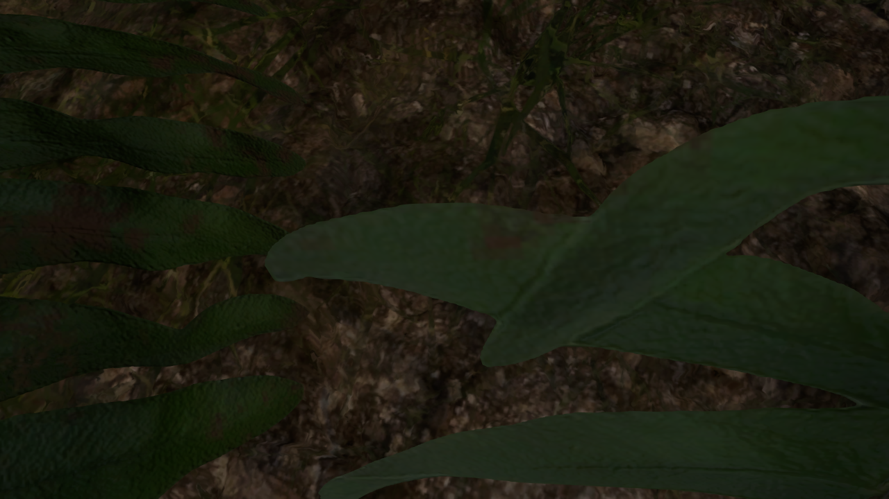
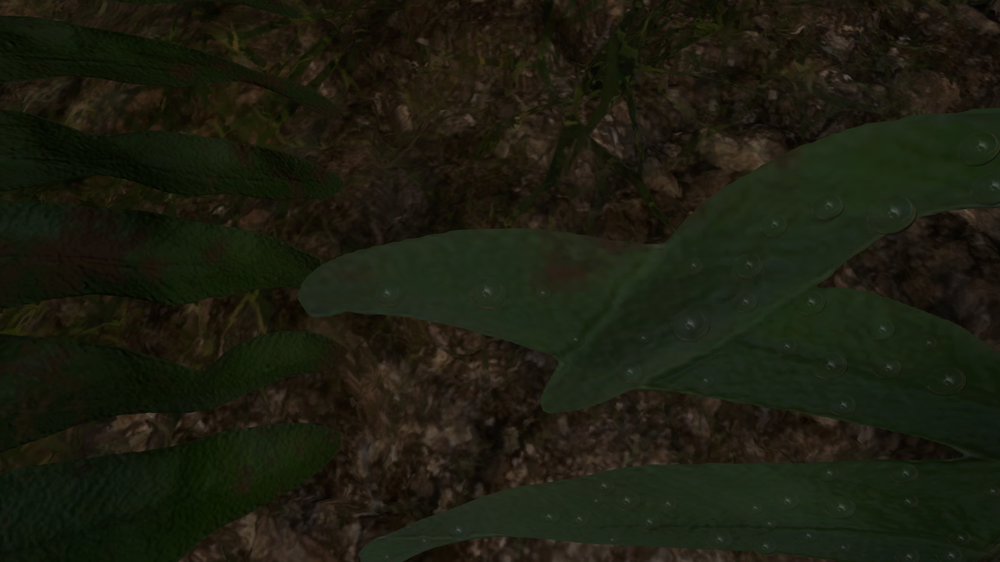

01 / ATTACHMENT
落在真正的叶片上
按叶片 Alpha 贴图筛选落点，避开透明区域和边缘。水滴保存所在三角形与重心坐标，使用与叶片相同的风动时间更新位置。近景叶面增加了露珠密度。
在原森林已有的蕨类植被上加入透明水滴。下方是 Godot 4.6.1 · Forward+ 的本机渲染截图，可拖动分界线比较；实时风动、相机移动和材质开关通过本地场景查看。


未加露珠加入露珠按叶片 Alpha 贴图筛选落点，避开透明区域和边缘。水滴保存所在三角形与重心坐标，使用与叶片相同的风动时间更新位置。近景叶面增加了露珠密度。
水折射率 1.333，非金属、低粗糙度。曲面折射叶片与背景，掠射角反射增强。颜色在 HDR 线性空间合成，沿用场景最终曝光与色调映射。
使用太阳光和局部森林反射探针，探针不包含露珠自身。对比局部森林与仅天空的反射：树荫下的水滴应体现周围树木的暗色，而非一直出现明亮的天空高光。
在 D:\shaderagent17_s0_s1\kenney_shader_pilot 中双击 Forest_Dew.cmd。编辑场景使用 Edit_Forest_Dew.cmd，进入后按 F6 运行当前露珠场景。
1 近景 2 整株 3 原森林视角 D 露珠开关 L 森林/天空反射 Space 暂停风动。按住鼠标右键并使用 WASD 移动；Q/E 升降，Shift 加速，R 恢复当前镜头。
这是原工程内的独立场景变体，原 Main.tscn 保留。对比两侧都使用修正后的蕨类运行时材质：灰度粗糙度贴图不再作为金属度/AO，UV 参数改为对应的二维类型。水滴采用屏幕空间折射，不能折射屏幕外或其他透明物体；局部反射探针也不是逐水滴的光线追踪。